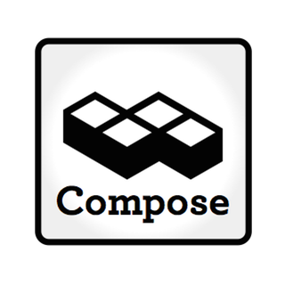

Composing our thanks
It’s that day of the year when everyone in the United States gets to reflect on the year past and what they are thankful for. Before most of the Compose crew went to celebrate the day, I asked them what things make us thankful about Compose…
Thanks for remote working
Kyle, who’s based out in South Africa, says “I’m really thankful for having the opportunity to work at a company that is killing it and for the 500+ hours that I’ve regained annually since I started working remotely because I don’t have to commute anymore. I’m undecided as to whether I should use that time to nap or learn a new skill.”
Steve, who’s come from the UK to the US with Compose, said “I’m thankful that I’ve been able to experience living in a different country, and all the help the company gave me to make that happen (and also that I know I can just as happily move back to the UK and work from there if I ever need to). I am also thankful that my colleagues put up with (and sometimes share) my often questionable sense of humour.”
“I’m thankful for a company that makes remote work… work so well” says Wesley but adds that “as much as I’m hoping to get to one or both of the offices in the near future.”
Thom, who looks after marketing, added his thanks with “I’m pretty thankful that I get to work for a great company and still live in Tulsa. I’m also thankful for co-working so I don’t have to work alone.”

Thanks for company culture
Nick had two things he was thankful for – “Thankful for being able to work with friends that treat each other like family, on a product that we love. Thankful that not every database lives in the JVM.”
“I am thankful for an understanding wife on on call nights when Rackspace or Amazon has an outage” said Matt who was “also thankful for Jason McCay introducing the company to Ninja Ball and getting to watch Nick body check Kyle into a wall while playing it in a bar. Thankful for a company that allows you to laugh as hard as you work. Also thankful for the company requirement you watch Pitch Perfect before joining. Life changing movie”. He’s not joking about the movie and we’ll tell all about Ninja Ball during the holidays.
Tim picked up on one of the company’s core philosophies to be thankful for – “I’m thankful that there’s a level of trust at the company that allows everyone to pitch in, try something new, or fix a flaw without fear of stepping on toes”. He also enjoys the benefits of remote working adding “I’m also thankful that, by working in Chicago, I am not subjected to Pitch Perfect screenings until such time that Stockholm Syndrome sets in and it becomes not only watchable, but desirably so.”
“I’m thankful to be able to work for a company that understands how important family is” said JP explaining that “It doesn’t matter if you have no kids or 5 kids, when our families need us, they come first. I’m also thankful for every person I get to work with, everyone is super talented and always willing to help others out. And finally, I’m thankful for having been introduced to Pitch Perfect.”
Michele was also grateful for that company culture – “I am thankful I am surrounded by a bunch of ridiculously smart, interesting, and dedicated people who get excited about what they do every day. I’m also thankful that I get to work for a company that actively removes most of the usual barriers that can make it hard to balance work and family, so that everyone can just focus on building cool stuff and taking care of our customers.”… There was one other thing she wanted to be thankful for. “Finally, and perhaps most importantly, I’m thankful that the people I work with understand that good coffee, made correctly, is an essential part of life.”
One particular member of the Compose crew, Brandon, was thankful for the intersection of remote working and company culture – “My wife and I just had our third child, a baby girl, in October. We’re both so thankful for her, but also we’re especially grateful for the way Compose supports families. I work from the Birmingham office, but we wanted to have our baby near my wife’s family in Wisconsin. So we packed up our kids and traveled north for the last three months of the pregnancy. I worked remotely while we stayed with family in Green Bay and after our baby was born, I was so thankful for Compose’s “take what you need” paternity leave and for how flexible and supportive they are through this whole adventure.
Thanks for machines
“The San Mateo coffee machine, for being resilient despite the abuse we put it through, and for continuing to produce drinkable coffee” was the recipient of thanks from Navam.
While it’s important to have machines that help us focus, on the other hand, Chris was thankful for devices that distract – Raspberry Pis and Arduinos – as they “makes for fun adventure time away from databases and software”.
Thom added some extra thanks for his Mac which he’d switched to after being nudged into it “by the people I work with who keep me from making horrible purchasing decisions”
Thanks for the weather
Finally Kurt was I’m thankful that the weather in the Bay lets me play non-virtual soccer year round. Also for the proliferation of really interesting open source DBs.
And me? I’m thankful I’m not the smartest guy in the virtual room at Compose and I get to write about what everyone else is doing. Have a good Thanksgiving everyone.